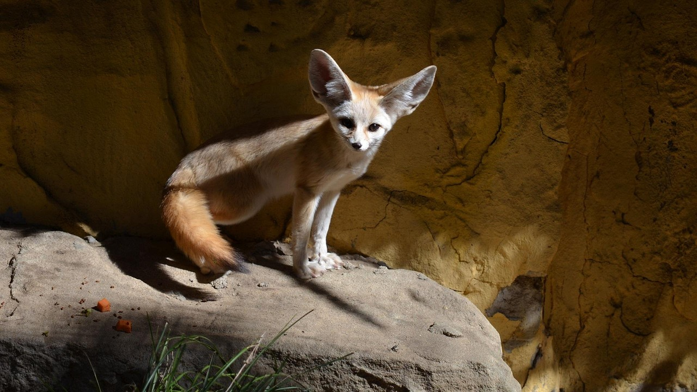

L’équipe nationale d’Algérie 🇩🇿
L’équipe d’Algérie, surnommée les Fennecs, représente le pays dans les grandes compétitions comme la CAN et les qualifications pour la Coupe du Monde.
Une sélection nationale doit construire un groupe solide : défense organisée, milieux capables de récupérer et d’attaquer, et des attaquants efficaces. L’Algérie est connue pour ses supporters très passionnés et une vraie fierté nationale.
- Surnom : Les Fennecs
- Confédération : CAF (Afrique)
- Objectif : se qualifier et performer dans les compétitions


Si la vidéo ne s’affiche pas : regarder sur YouTube.